Project Everest — 1:1 VehicleHMI Native C++ UI, ControlVehicle & Dual-Tier Renderer Exhibits
20 native 1920×1080 captures from ProjectEverestValidation: 1:1 ImTextureData RGBA32 viewport, binary 'FCT1' ControlVehicle + live 6-DOF Pacejka MF6.1 / 32×5 Hex8 FEM + DualTierVulkan RTX/GTX command recorder + 44,826-triangle Proving Grounds.scene.
 01 · Project Browser Library enumerating Project Everest
01 · Project Browser Library enumerating Project Everest
 02 · Project Browser Reader & Open in Frontier hand-off
02 · Project Browser Reader & Open in Frontier hand-off
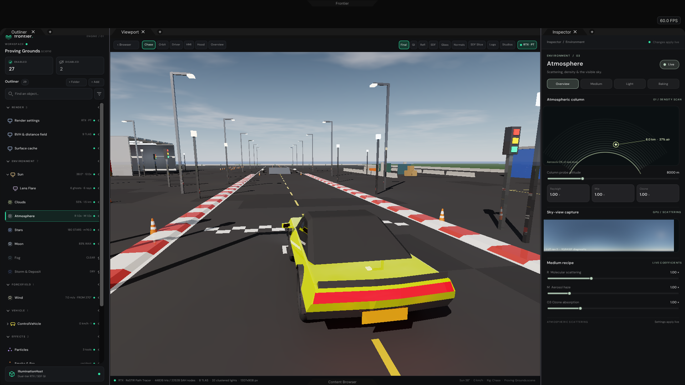
03 · Default 29-Record Proving Grounds Shell (Chase Camera + Atmosphere Observatory)
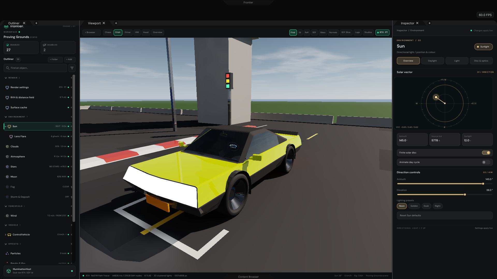
04 · Sun Observatory + Front-Three-Quarter Orbit on Sculpted ControlVehicle
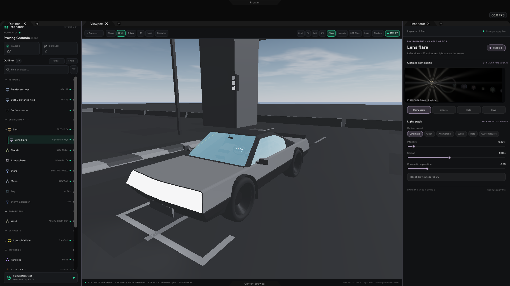
05 · Lens Flare Observatory + Dielectric Glazing AOV (Refracted OLED Cluster)
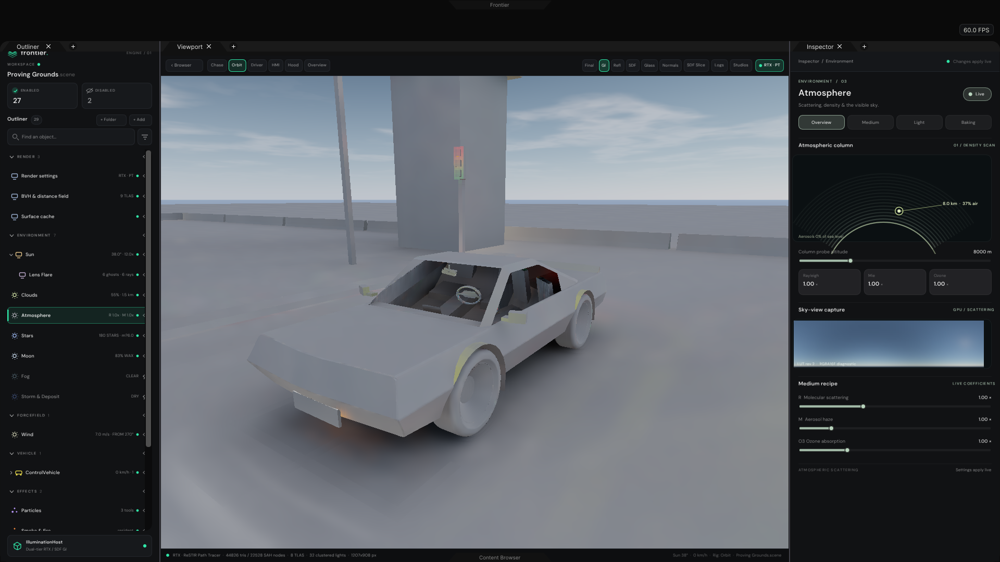
06 · Atmosphere Observatory + 4-Pass À-Trous SVGF Indirect GI AOV
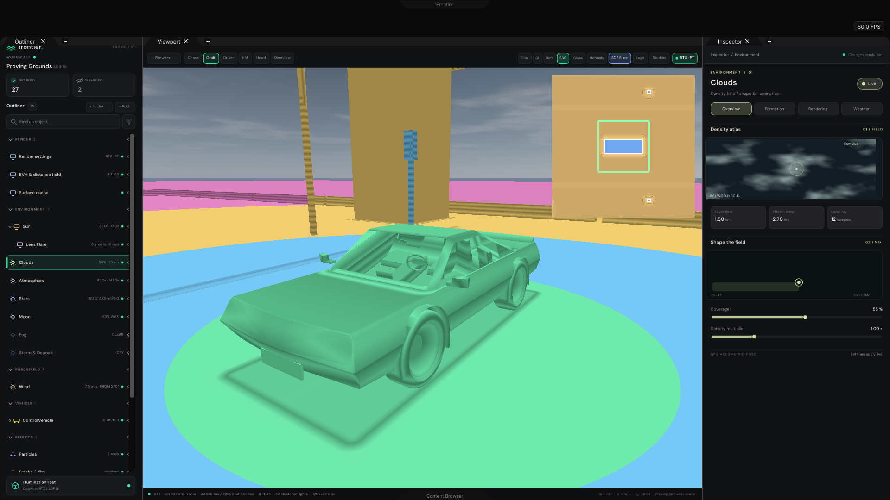
07 · Clouds Observatory + 4-Cascade Toroidal SDF AOV & Horizontal Slice Inset
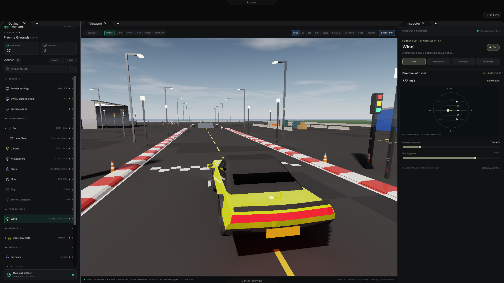
08 · Wind Forcefield Observatory + Live GTX · SDF + SAH BVH Fallback
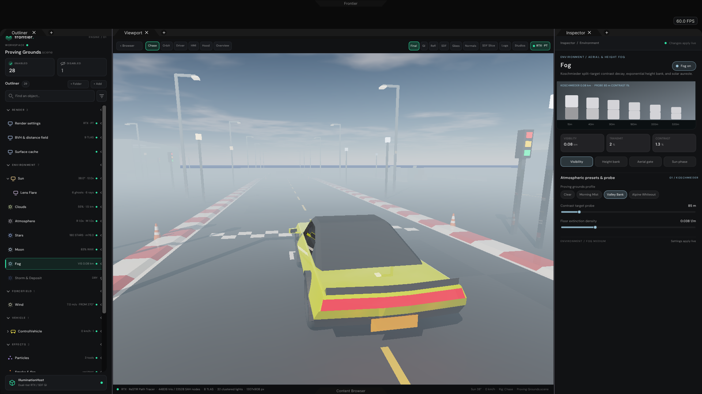
09 · Fog Observatory (Valley Bank) + Koschmieder Visibility Targets
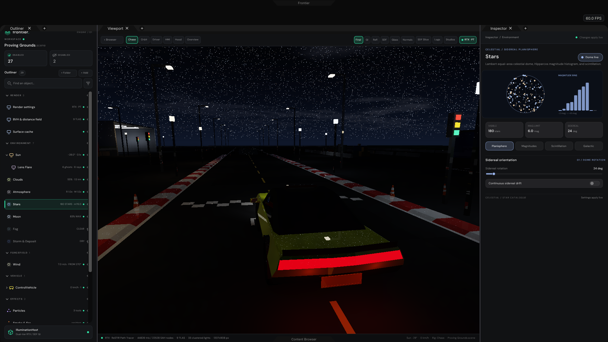
10 · Hipparcos Pinpoint Stars Planisphere + Night Street Lamps & High Beams
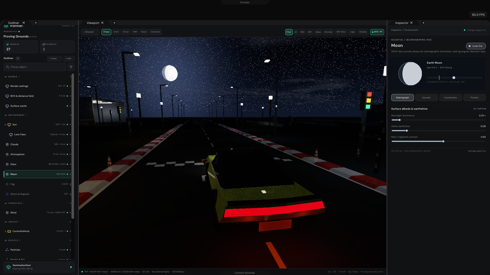
11 · 83% Waxing Selenographic Moon Disc & Earthshine Over Straight
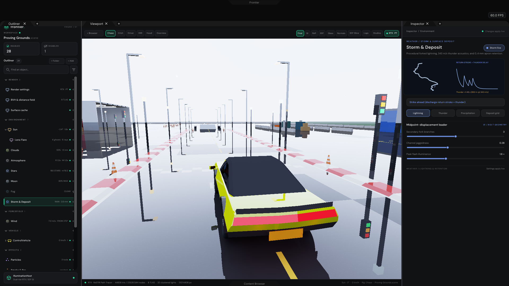
12 · Storm Forked Lightning, 343 m/s Thunder & Wet Mirror Asphalt
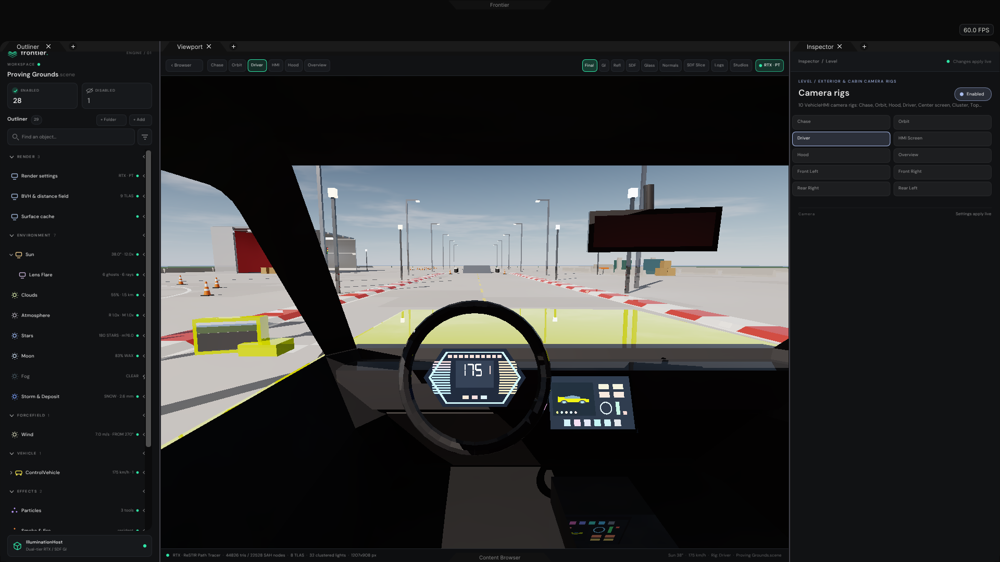
13 · Driver Cockpit: 175 km/h OLED Cluster + 14" HMI Tablet + Snow Deposit
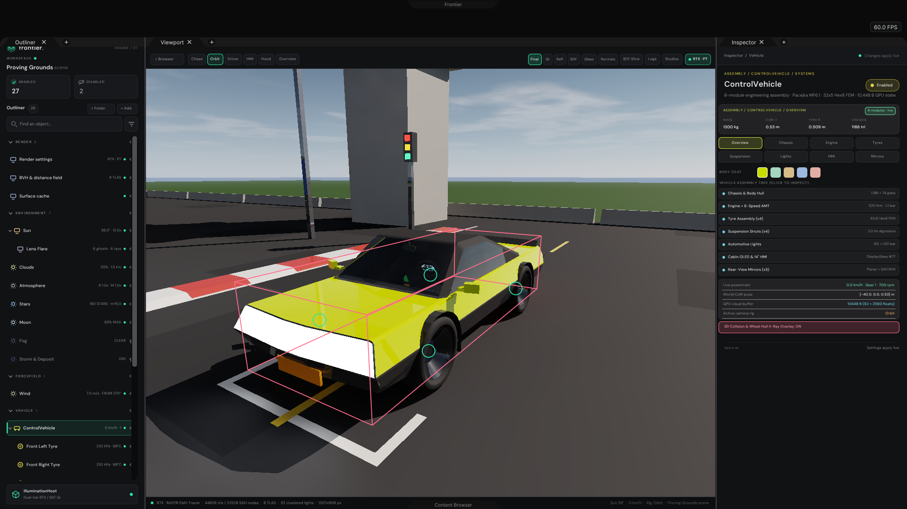
14 · 8-Tab ControlVehicle Systems Inspector + World-Space Collision X-Ray
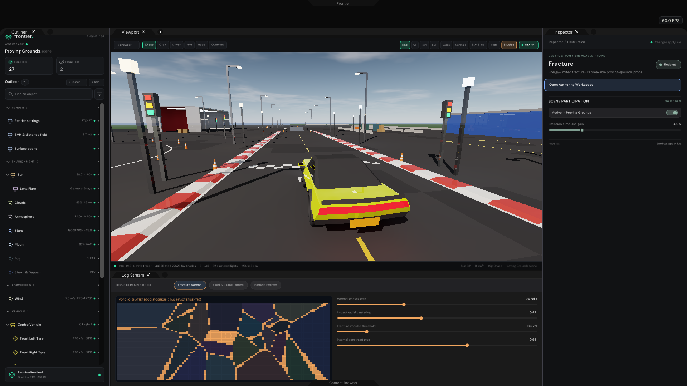
15 · Collapsible Bottom Drawer: Tier-3 Fracture Voronoi Shatter Studio
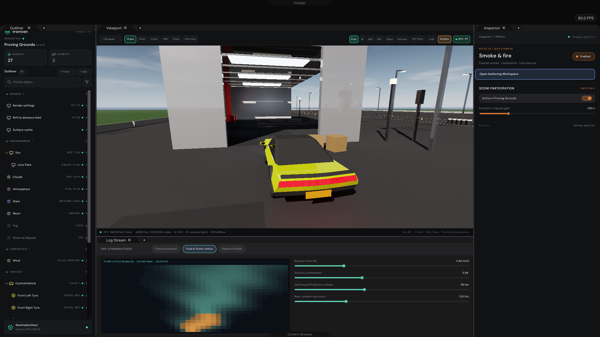
16 · Hangar Apron Teleport + Tier-3 Fluid & Plume Lattice Studio (31.5 MiB Validated)
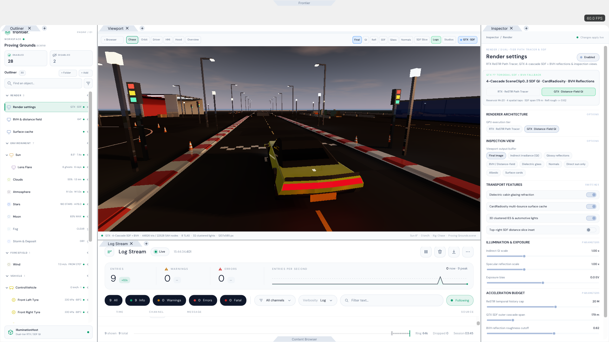
17 · GTX · SDF Fallback + Golden Hour + Log Stream + Control Centre Light Theme
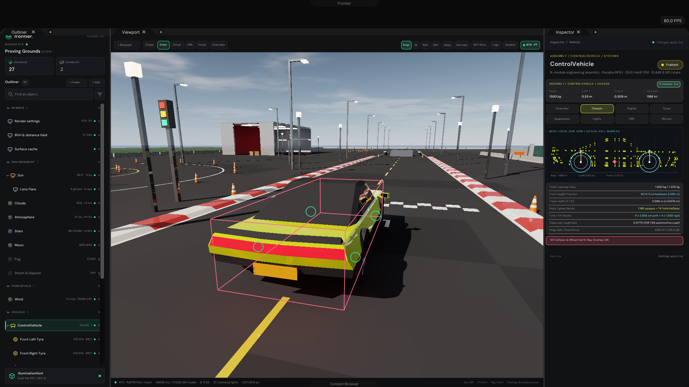
18 · ControlVehicle Tab 1 (Chassis): Body-Local Actual Hull Samples & Sockets
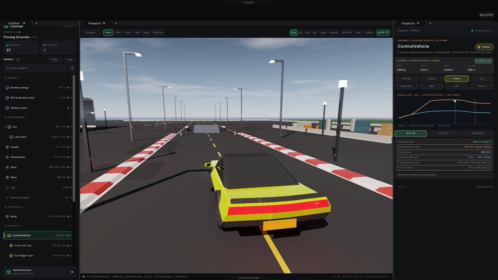
19 · ControlVehicle Tab 2 (Engine): 96.5 km/h WOT Launch & 520 Nm + 1.2 bar Curve
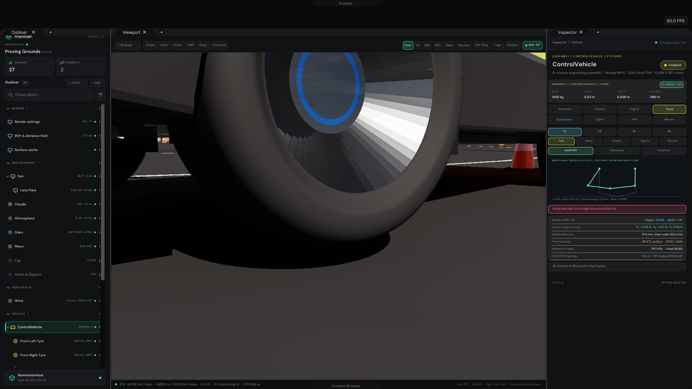
20 · ControlVehicle Tab 3 (Tyres): 4,745 N Trail-Braking & 32×5 Hex8 FEM Bulge